Лекция посвящена инструменту Заливка. В ней рассматриваются типы заливок объектов, имеющих замкнутые контуры, параметры, способы и примеры их использования.

Заливка
Создавая иллюстрации, к объектам можно применять разнообразные типы заливки. В программе CorelDRAW существуют следующие варианты заливки: однородная, градиентная, узорная и текстурная (рис. 11.1). Параметры выбранного варианта можно настроить в любой момент после применения заливки к замкнутому контуру.
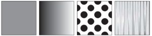
Рис. 11.1 Различные варианты заливки
Различные типы заливки входят в группу инструментов Fill (Заливка) (рис. 11.2).
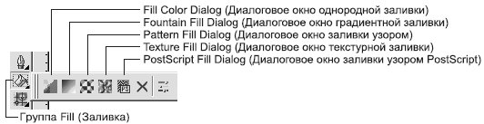
Рис. 11.2 Группа инструментов Fill (Заливка)
В настоящее время разработчики программ для работы с компьютерной графикой стараются удовлетворить растущую потребность пользователей в приложении типа "все включено", которое предоставляло бы возможность работать с различными видами графических изображений. В общем случае применение в редакторе векторной графики определенного типа заливки — это не что иное, как использование растрового эффекта. По аналогии с программами растровой графики для подбора и использования требуемого цвета вы можете применять инструменты Eyedropper (Пипетка) и Paintbucket (Заполнитель) (рис. 11.3).
В отличие от редакторов растровой графики, программа CorelDRAW дает больше возможностей для настройки типа заливки: для этого предназначена группа инструментов Interactive Fill (Интерактивная заливка) (рис. 11.4).
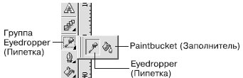
Рис. 11.3 Группа инструментов Eyedropper (Пипетка)
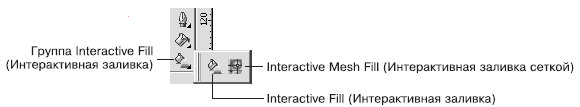
Рис. 11.4 Группа инструментов Interactive Fill (Интерактивная заливка)
Следует заметить, что наиболее "легким" средством, не требующим больших затрат ресурсов системы, является однородная заливка.
Однородная заливка
Однородная заливка представляет собой вариант заливки, когда объект, имеющий замкнутый контур, заполняется однородным цветом, который можно выбрать на цветовой палитре или с помощью окна Uniform Fill (Однородная заливка).
Чтобы применить однородную заливку, выполните следующие действия.
-
Выберите инструмент Pick (Выбор) ( ).
).
-
Щелкните на объекте, имеющем замкнутый контур.
-
Щелкните на панели графики на инструменте Fill (Заливка) (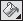).
-
Выберите вариант Fill Color Dialog (Диалоговое окно однородной заливки) (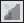).
-
В открывшемся диалоговом окне Uniform Fill (Однородная заливка) (рис. 11.5) настройте требуемые параметры заливки.
-
Щелкните на кнопке OK.
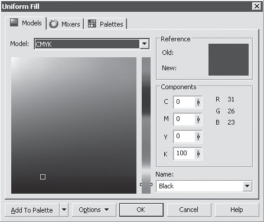
Рис. 11.5 Диалоговое окно Uniform Fill (Однородная заливка)
Окно Uniform Fill (Однородная заливка) содержит три вкладки: Models (Модели), Mixers (Смешение цветов) и Palettes (Палитры). Правая часть всех вкладок состоит из трех областей:
-
Reference (Ссылка) — отображает старый (Old) и новый (New) цвета;
-
Components (Компоненты) — отображает компоненты в зависимости от указанной модели (Model) выбранного цвета;
-
Name (Имя) — название выбранного цвета.
Models (Модели)
Вкладка Models (Модели) окна Uniform Fill (Однородная заливка) используется для выбора требуемого цвета на вертикальной полосе цветового спектра и квадратном поле оттенков (рис. 11.6).
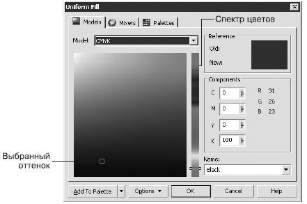
Рис. 11.6 Вкладка Models (Модели) окна Uniform Fill (Однородная заливка)
Последовательность действий при выборе цвета следующая.
-
С помощью указателя мыши перетащите ползунок, расположенный на вертикальной полосе спектра цветов, и расположите его на требуемом цвете.
-
Щелкните на требуемом оттенке на поле, расположенном справа от спектра.
Mixers (Смешение цветов)
Вкладка Mixers (Смешение цветов) окна Uniform Fill (Однородная заливка) представляет собой полезный инструмент для подбора цветов с целью их гармоничного сочетания в соответствии с существующими законами колористики (науки о сочетании цветов). Эту функцию рекомендуется использовать пользователям, только начинающим работать с программами компьютерной графики и не знакомым с академическими правилами подбора цветов.
Правила подбора цветов можно указать путем выбора соответствующих пунктов из списков Hues (Оттенки) и Variation (Изменение). Количество вариантов цветовых сочетаний задают с помощью ползунка Size (Размер) (рис. 11.7).
Последовательность действий при подборе цветов на данной вкладке следующая.
-
Используя цветовой круг, выберите исходный цвет, оттенок которого будете подбирать.
-
Из списка Hues (Оттенки) выберите один из вариантов подбора цветов.
-
Из списка Variation (Изменение) выберите один из вариантов "эмоционального" изменениe оттенков.
-
С помощью ползунка Size (Размер) выберите количество цветовых сочетаний.
-
В таблице оттенков цветов выберите понравившийся оттенок цвета.
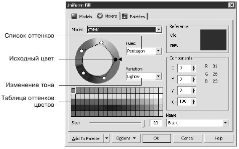
Рис. 11.7 Вкладка Mixers (Смешение цветов) окна диалога Uniform Fill (Однородная заливка)
Palettes (Палитры)
Вкладку Palettes (Палитры) окна Uniform Fill (Однородная заливка) используют для выбора требуемого цвета из набора палитр цветов PANTONE, используемых в полиграфии (рис. 11.8).
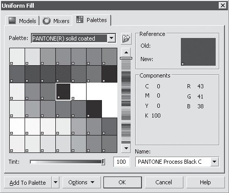
Рис. 11.8 Вкладка Palettes (Палитры) окна Uniform Fill (Однородная заливка)
Цвета, входящие в наборы палитр PANTONE, имеют международные названия, которые однозначно определяют их. Цвет можно выбирать как визуально, из таблицы цветов, так и по названиям, в списке Name (Имя). В общем случае цвета PANTONE являются заданными, хотя существуют наборы цветов, для которых возможно изменение тона (Tint). Кроме таблиц цветов PANTONE, входящих в список Palette (Палитра), существуют и другие.
При подборе цвета необходимо действовать следующим образом.
-
Из раскрывающегося списка Palette (Палитра) выберите требуемый набор цветов.
-
Щелкните на подходящем варианте в таблице цветов или выберите требуемое название цвета из раскрывающегося списка Name (Имя).
Цветовые палитры можно отобразить на рабочей области окна программы (рис. 11.9).
Чтобы отобразить необходимую цветовую палитру, выполните команду меню Window - Color Palettes (Окно - Цветовые палитры) и выберите в подменю требуемую палитру. При этом установится соответствующий флажок.
Чтобы спрятать цветовую палитру, повторно выполните эту команду. При этом соответствующий флажок будет снят.
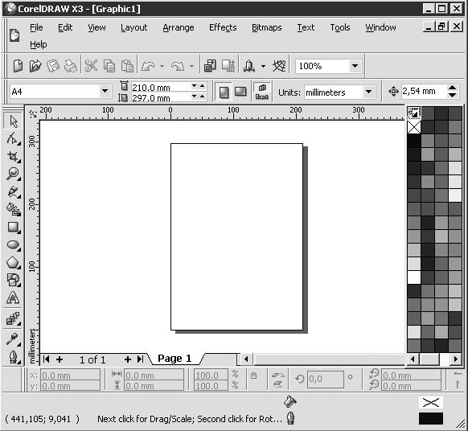
Рис. 11.9 Расположение цветовых палитр в окне программы CorelDRAW
Градиентная заливка
Чтобы применить градиентную заливку (Fountain Fill), выполните следующие действия.
-
Выберите инструмент Pick (Выбор) ().
-
Щелкните на объекте, состоящем из замкнутого контура.
-
Выберите на панели графики инструмент Fill (Заливка) ().
-
Выберите вариант Fountain Fill Dialog (Диалоговое окно градиентной заливки) (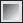).
-
В открывшемся диалоговом окне Fountain Fill (Градиентная заливка) (рис. 11.10) настройтe требуемые параметры заливки.
-
Щелкните на кнопке OK.
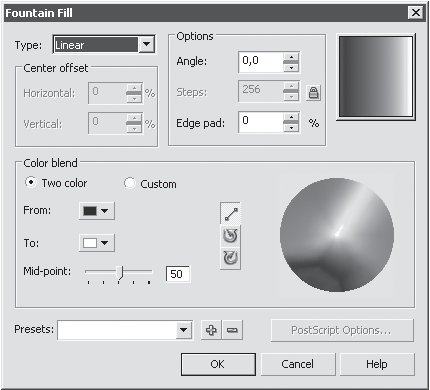
Рис. 11.10 Окно Fountain Fill (Градиентная заливка)
Из раскрывающегося списка Type (Тип) можно выбрать один из следующих типов градиентной заливки:
-
Linear (Линейный);
-
Radial (Радиальный);
-
Conical (Конический);
-
Square (Квадратный).
Градиентную заливку используют совместно с другими инструментами для имитации реалистичных поверхностей.
Линейная градиентная заливка
Линейную градиентную заливку используют для создания перехода цвета по прямой линии (рис. 11.11).
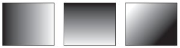
Рис. 11.11 Примеры линейной градиентной заливки
Данный тип заливки обладает следующими параметрами (рис. 11.12):
-
В области Options (Параметры):
-
Angle (Наклон направляющей) — направление растяжки цветового перехода;
-
Steps (Шаги) — сглаженность цветового перехода;
-
Edge pad (Ширина градиентного перехода) — ширина градиентного перехода.
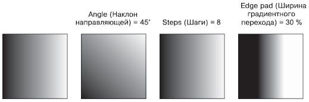
Рис. 11.12 Примеры линейной градиентной заливки с различными значениями параметров
-
Color blend (Переход цвета):
Радиальная градиентная заливка
Тип Radial (Радиальная) градиентной заливки используют для создания сферических переходов между цветами (рис. 11.13).
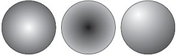
Рис. 11.13 Примеры радиальной градиентной заливки
Для радиальной градиентной заливки можно настроить такие параметры (рис. 11.14):
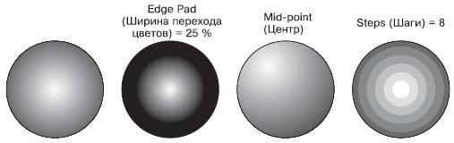
Рис. 11.14 Примеры радиальной градиентной заливки с различными значениями параметров
-
В области Center offset (Смещение центра):
-
В области Options (Параметры):
-
В области Color Blend (Переход цвета):
Коническая градиентная заливка
Тип Conical (Коническая) градиентной заливки используется для создания спектра цветов в секторе, определяемом углом 180°.
Нарис. 11.15 показан пример конической заливки.
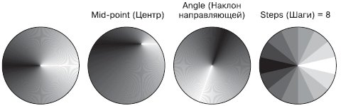
Рис. 11.15 Примеры конической градиентной заливки с различными значениями параметров
-
В области Center offset (Смещение центра) выбирают направление и степень смещения центра:
-
В области Options (Параметры):
-
Steps (Шаги) — сглаженность цветового перехода.
Квадратная градиентная заливка
Квадратную градиентную заливку используют для создания эффекта перехода в виде концентрических квадратов (рис. 11.16).
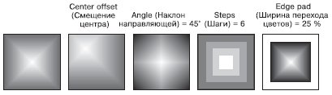
Рис. 11.16 Примеры квадратной градиентной заливки с различными значениями параметров
-
В области Center offset (Смещение центра) направление и степень смещения центра:
-
В области Options (Параметры):
-
Steps (Шаги) — сглаженность цветового перехода;
-
Angle (Наклон направляющей) — направление растяжки цветового перехода;
-
Edge pad (Ширина перехода цветов).
-
Color Blend (Переход цвета):
Пользовательская градиентная заливка
Описанные типы градиентных заливок по умолчанию используют режим Color Blend (Переход цвета), соответствующий двум цветам. Однако кроме двухцветной градиентной заливки в программе CorelDRAW существует возможность применения пользовательской градиентной заливки, которая может содержать два и более цветов, появляющихся в произвольной последовательности на созданной растяжке градиентной заливки (рис. 11.17).
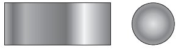
Рис. 11.17 Примеры пользовательской градиентной заливки
Чтобы применить градиентную заливку в режиме Custom (Пользовательский), выполните следующие действия.
-
Выберите инструмент Pick (Выбор) ().
-
Щелкните на объекте, состоящем из замкнутого контура.
-
Выберите на панели графики инструмент Fill (Заливка) ().
-
Выберите вариант Fountain Fill Dialog (Диалоговое окно градиентной заливки) ().
-
В открывшемся диалоговом окне Fountain Fill (Градиентная заливка) (рис. 11.18) в области Color blend (Переход цвета) установите переключатель в положение Custom (Пользовательский) и настройте требуемые параметры заливки.
-
Щелкните на кнопке OK.
Раскрывающийся список Type (Тип) содержит варианты Custom (Пользовательский), Linear (Линейный), Radial (Радиальный), Conical (Конический), Square (Квадратный), которым соответствуют определенные настройки.
В области Color blend (Переход цвета) для выборочной градиентной заливки можно настроитe следующие параметры (см. рис. 11.18).
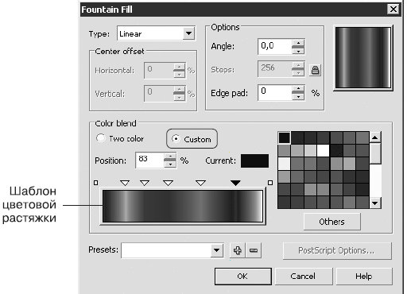
Рис. 11.18 Окно Fountain Fill (Градиентная заливка)
Справа в области Color blend (Переход цвета) расположена цветовая палитра — стандартная палитра CMYK с возможностью выбора дополнительных цветов (для этого следует нажать кнопку Others (Другие)).
Использование шаблона цветовой растяжки, который также расположен в области Color blend (Переход цвета), позволяет создать стиль градиентной заливки, который может содержать два или более цветов, расположенных в произвольной последовательности.
Чтобы изменить цвет одного из крайних маркеров (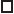), необходимо выполнить такие действия.
-
Щелкнуть на нужном маркере.
-
Щелчком выбрать на цветовой палитре требуемый цвет.
Чтобы добавить промежуточный маркер, дважды щелкните на шаблоне цветовой растяжки. В результате над шаблоном появится промежуточный маркер ().
Чтобы изменить цвет промежуточного маркера, необходимо щелкнуть на нем и выбрать требуемый цвет щелчком на цветовой палитре.
Для удаления промежуточного маркера необходимо дважды щекнуть на нем. Чтобы изменить положение промежуточного маркера, его необходимо перетащить с помощью мыши или ввести требуемое значение в поле Position (Позиция).
Узорная заливка
Узорная заливка позволяет заполнять область внутри замкнутого контура повторяющимся двухцветным, цветным или точечным рисунком — узором (рис. 11.19).
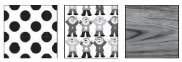
Рис. 11.19 Примеры узорной заливки
Чтобы применить узорную заливку, выполните следующие действия.
-
Выберите инструмент Pick (Выбор) ().
-
Щелкните на объекте, состоящем из замкнутого контура.
-
Выберите на панели графики инструмент Fill (Заливка) ().
-
Выберите в группе Fill (Заливка) вариант Pattern Fill Dialog (Диалоговое окно узорной заливки) (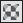).
-
В открывшемся окне Pattern Fill (Узорная заливка) (рис. 11.20) настройте требуемые параметры заливки.
-
Щелкните на кнопке OK.
В верхней части диалогового окна Pattern Fill (Узорная заливка) можно выбрать один из трех вариантов заливки:
-
2-color (Двухцветный) — внутренняя область объекта заполняется двухцветным узором-oбразцом;
-
Full color (Полноцветный) — внутренняя область замкнутого контура заполняется цветным узором-образцом;
-
Bitmap (Точечный) — внутренняя область объекта заполняется повторяющимся растровым изображением-образцом.

Рис. 11.20 Окно Pattern Fill (Узорная заливка)
Центральная и нижняя части окна Pattern Fill (Узорная заливка) содержат настройки, связанные с трансформированием геометрии, изменением расположения и искажением узора-образца и всей заливки в целом.
Трансформирование образца узора
Для всех вариантов узорной заливки (двуцветной, полноцветной и точечной) существуют параметры, с помощью которых можно преобразовывать геометрию, расположение и искажать образцы узоров и всей заливки в целом (рис. 11.21.
-
Origin (Положение) — положение (по осям X и Y) начальной точки, с которой начинается заполнение внутренней области фигуры. По умолчанию эта точка находится в левом нижнем углу габаритной рамки фигуры.
-
Size (Размер) — геометрический размер элемента узора (ширина (Width) и высота (Height)).
-
В области Transform (Трансформирование) можно установить перекос (Skew) или поворот (Rotate) заливки относительно объекта. Положительное значение угла перекоса приводит к перекосу верхней стороны фрагмента узора влево, отрицательное значение — вправо. Положительное значение угла поворота приводит к повороту узора против часовой стрелки, отрицательное — по часовой стрелке.
-
В области Row or column offset (Смещение строки или столбца) можно указать направление и степень смещения строк или столбцов узора относительно друг друга.
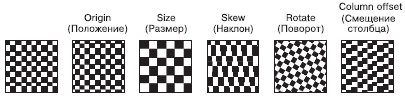
Рис. 11.21 Примеры трансформационных искажений узора
Двухцветный узор
Использование данного типа заливки позволяет заполнить внутреннюю область объекта двухцветным узором, который можно выбрать из списка узоров или создать самостоятельно, вызвав редактор узора.
Существуют следующие настройки для заливки данного типа:
-
Front (Передний план) — список цветов для рисунка узора;
-
Back (Задний план) — список цветов для фона узора;
-
Load (Загрузить) — возможность загрузки изображения для применения его в качестве двухцветного узора;
-
Delete (Удалить) — удаление образца узора из списка;
-
Create (Создать) — вызов редактора двухцветной палитры, позволяющего создать новый образец узора.
Если подходящий вам вариант узора отсутствует в списке доступных, то вы можете создать новый образец. Для этого следует щелкнуть на кнопке Create (Создать). При этом на экране появится окно Two–Color Pattern Editor (Редактор двухцветной палитры) (рис. 11.22).
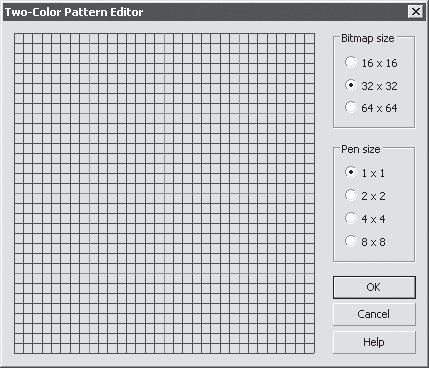
Рис. 11.22 Окно Two-Color Pattern Editor (Редактор двухцветной палитры)
Окно редактора двухцветной палитры представляет собой рабочую область в виде сетки, на которой с помощью мыши строят (рисуют) узор.
Переключатель Bitmap size (Размер изображения) позволяет задать один из следующих вариантов размера:
Размер пера для рисования (Pen size) также задают с помощью переключателя:
Узор создают щелчками кнопки мыши. Чтобы удалить узор, необходимо щелкнуть правой кнопкой мыши.
Полноцветный и точечный узоры
Заливка полноцветным и точечным узором представляет собой сложные цветные изображения. Такие заливки хорошо подходят для создания оригинальных эффектов.
Для этих типов заливки доступны следующие команды:

ПРИМЕЧАНИЕ. Отличие полноцветного узора от точечного заключается в том, что полноцветный представляет собой сложное векторное цветное изображение, а точечный — растровое.
Заливка текстурой
Заливка текстурой (Texture Fill) представляет собой сгенерированный случайным образом образец растрового изображения, которым можно заполнить внутреннюю область фигуры.
Чтобы применить текстурную заливку, выполните следующие действия.
-
Выберите инструмент Pick (Выбор) ().
-
Выделите объект, имеющий замкнутый контур.
-
Выберите на панели графики инструмент Fill (Заливка) ().
-
Выберите вариант Texture Fill Dialog (Диалоговое окно текстурной заливки) (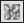).
-
В открывшемся диалоговом окне Texture Fill (Текстурная заливка) (рис. 11.23) выполните требуемые настройки.
-
Щелкните на кнопке OK.
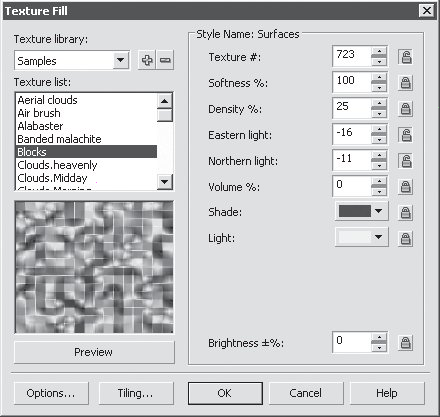
Рис. 11.23 Окно Texture Fill (Текстурная заливка)
Программа CorelDRAW обладает набором библиотек текстур, которые можно выбрать в списке Texture library (Библиотека текстур). Определенной библиотеке соответствуют различные текстуры, представленные в раскрывающемся списке Texture list (Список текстур). Для каждого варианта текстуры можно настроить параметры. Эти параметры располагаются в области Style name (Название стиля), и их можно изменить с целью получения требуемого результата.
Кнопка Preview (Предварительный просмотр) позволяет генерировать новую текстуру, изменяя настройки параметров, для которых отключена блокировка (кнопка в виде замка не нажата).
Нажав кнопку Options (Параметры), можно задать параметры текстуры, определяющие качество заливки. Для этого следует установить соответствующее значение для параметра Bitmap resolution (Разрешение изображения).
Кнопка Tiling (Разбиение) открывает одноименное окно, содержащее стандартные параметры, связанные с трансформированием геометрии, изменением расположения и искажением образца-узора и всей заливки в целом.
Выводы
Рассмотренные в данной главе способы заливки объектов, имеющих замкнутые контуры, являются элементами, заимствованными из редакторов растровой графики. Исключение составляет лишь заливка однородным цветом. Выполнение сложных заливок требует серьезных затрат ресурсов системы, иногда эти действия даже могут привести к "зависанию" программы. Поэтому самое лучше, что можно порекомендовать в этом случае, — использовать соответствующие программы для работы с конкретными форматами графических изображений.